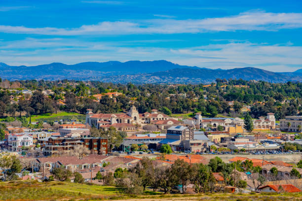
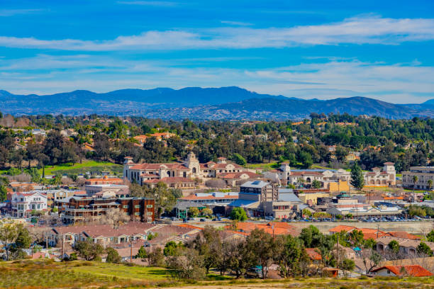

Sacramento, founded in 1839, has a rich history rooted in both early Californian exploration and the Gold Rush. Swiss immigrant John Sutter established Sutter’s Fort near the confluence of the American and Sacramento Rivers, with the aim of developing agriculture in the area. In 1848, gold was discovered at Sutter's Mill, igniting the California Gold Rush. The rush transformed Sacramento into a thriving hub as prospectors and entrepreneurs flooded the city. Its strategic location along the river made it a key supply point for miners
Incorporated as a city in 1850, Sacramento quickly became the state capital due to its prominence as a trade center and its location in the fertile Central Valley. The city’s early years, however, were marked by challenges, including devastating floods and fires. In response, city leaders undertook one of the earliest large-scale engineering projects in the United States, raising the downtown area by several feet to protect it from future flooding. This infrastructural advancement helped cement Sacramento’s place as a critical political and commercial center in California
During the late 19th and early 20th centuries, Sacramento continued to grow, boosted by the completion of the Transcontinental Railroad in 1869. The city played a pivotal role as the western terminus of the railroad, linking the Pacific Coast with the rest of the nation. Agriculture, transportation, and government services shaped the local economy in the 20th century, and Sacramento’s growth continues today as the city evolves into a diverse and dynamic urban area, while remaining the political heart of California
| Service Type | Contact Information | Details |
|---|---|---|
| City Hall | (916) 808-5011 | General inquiries about city services |
| Sacramento Police Department | (916) 808-5471 | Non-emergency police line |
| Sacramento Fire Department | (916) 808-1300 | Fire safety, prevention, and emergencies |
| Chamber of Commerce | (916) 552-6800 | Business networking and promotion support |
| Economic Development Department | (916) 808-7223 | Information on business development and support |
| Library Services (Sacramento Public Library) | (916) 264-2700 | Public library services and resources |
| Waste Management | (916) 808-5011 | Trash, recycling, and disposal services |
| Public Works Department | (916) 808-8300 | Road maintenance, utilities, and infrastructure services |
| Animal Control | (916) 808-7387 | Animal services, licensing, and adoptions |
| Sacramento City Unified School District | (916) 643-7400 | School information and enrollment inquiries |